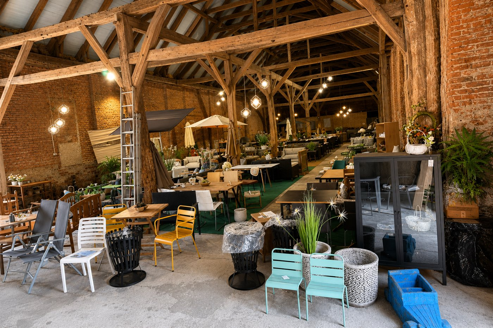
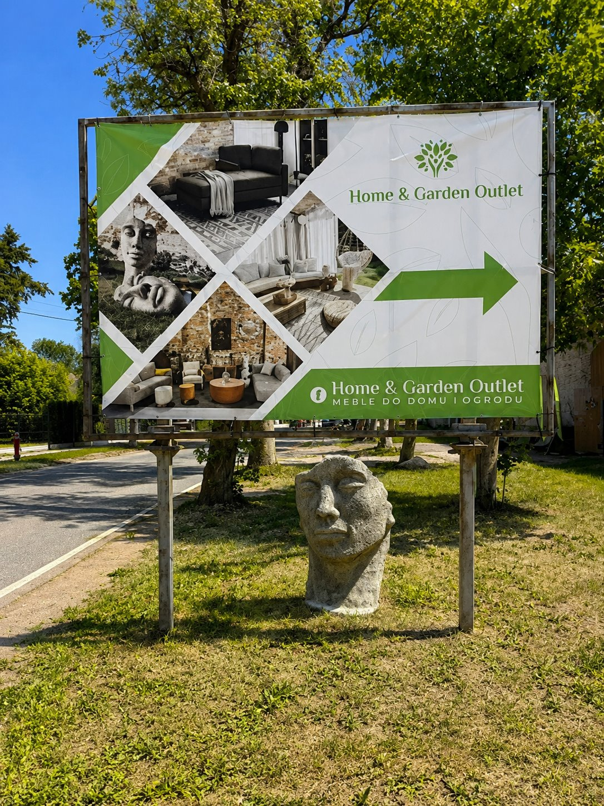
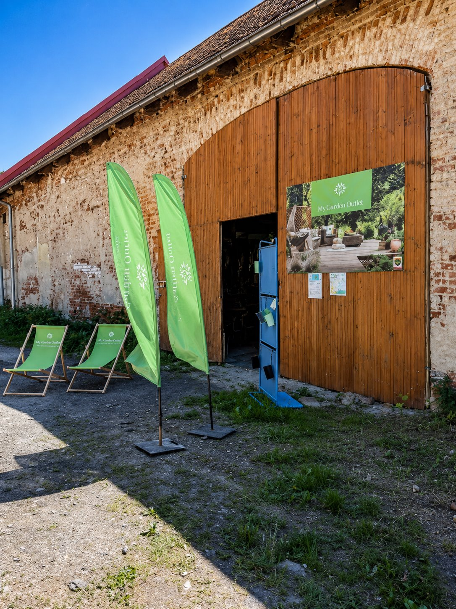
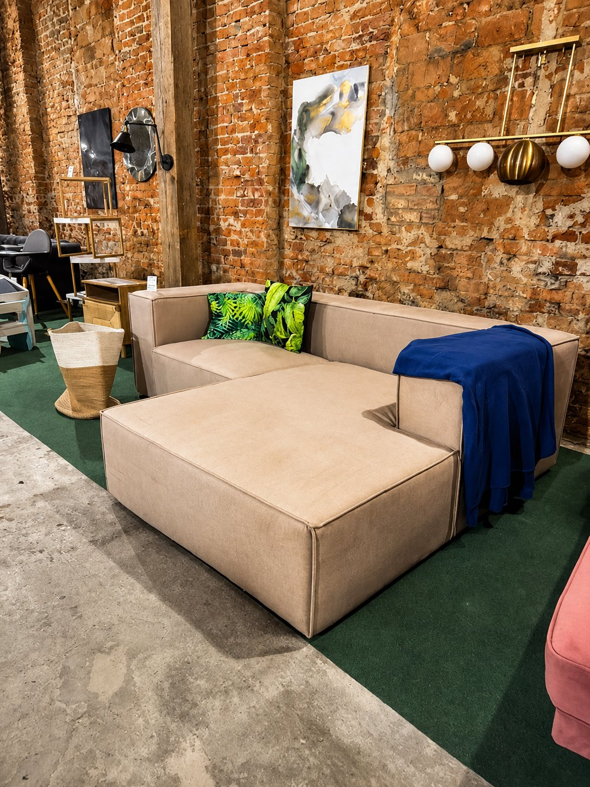

Sofy, fotele, stoły, krzesła, lampy, dodatki i meble dostępne od ręki w showroomie.
Zobacz dom
Outlet mebli pod Wrocławiem
Outlet meblowy pod Wrocławiem meble do domu i ogrodu
Oglądasz realne produkty dostępne na miejscu: pojedyncze sztuki, końcówki kolekcji i nowe dostawy z naszego showroomu.
Szybki wybór
Czego szukasz?
Zestawy tarasowe, leżaki, stoły, krzesła, donice i pojedyncze okazje do ogrodu.
Zobacz ogródSklep online z figurami i dekoracjami ogrodowymi, z dostawą na terenie całej Polski.
Przejdź do sklepu onlineAktualna oferta
Polecane produkty dostępne od ręki
Zobacz wybrane okazje z aktualnej oferty naszego showroomu.
Aktualnie pokazujemy produkty z outletu
Oferta outletu zmienia się regularnie. Przed przyjazdem warto zadzwonić i potwierdzić dostępność.
Nie znaleziono produktu. Zadzwoń - oferta outletu zmienia się regularnie.
Zadzwoń i zapytaj Dostępne
4 zdjęć
Dostępne
4 zdjęć
Dekoracyjna kula ogrodowa z ornamentem różanym – grafitowo-złota
Cena: 150 zł
Dekoracyjna kula ogrodowa z ornamentem różanym to elegancka ozdoba o wyrazistym charakterze. Grafitowo-złote wykończenie pięknie podkreśla motyw róż i sprawia, że kula efektownie prezentuje się w ogrodzie, na tarasie lub przy wejściu do domu.
 Dostępne
5 zdjęć
Dostępne
5 zdjęć
Krzesło biurowe GLEEFUL — złamana biel
Cena katalogowa: 379 złCena outletowa: 150 złOszczędzasz: 229 zł
Krzesło biurowe GLEEFUL w odcieniu złamanej bieli, z tapicerowanym siedziskiem, regulacją wysokości, obrotem 360° i podstawą na kółkach.
Stan: Outletowy
Oferowany egzemplarz jest produktem outletowym / ekspozycyjnym i jest już zmontowany. Na przesłanych zdjęciach nie widać istotnych uszkodzeń konstrukcji ani tapicerowanego siedziska. Możliwe są drobne ślady związane z ekspozycją i magazynowaniem. - stan: outletowy / ekspozycyjny
 Dostępne
8 zdjęć
Dostępne
8 zdjęć
Biurko z nadstawką NOVEN 120 × 60 cm — jasnobrązowe
Cena katalogowa: 809 złCena outletowa: 470 złOszczędzasz: 339 zł
Biurko NOVEN 120 × 60 cm z nadstawką, szufladą i otwartą wnęką. Jasnobrązowe wykończenie z dekoracyjnymi elementami rattanowymi.
Stan: Outletowy
Oferowany egzemplarz jest produktem outletowym / ekspozycyjnym i jest już zmontowany. Na przesłanych zdjęciach nie widać istotnych uszkodzeń konstrukcji. Możliwe są drobne ślady związane z ekspozycją, montażem lub magazynowaniem. - stan: outletowy / ekspozycyjny
 Dostępne
5 zdjęć
Dostępne
5 zdjęć
Łóżko z baldachimem HAILLICOURT 180 × 200 cm — jasnobrązowe
Cena katalogowa: 2029 złCena outletowa: 930 złOszczędzasz: 1099 zł
Łóżko HAILLICOURT 180 × 200 cm z wysoką ramą baldachimu, wykonane z drewna kauczukowego. Jasnobrązowe wykończenie i tapicerowane wezgłowie.
Stan: Outletowy
Oferowany egzemplarz jest produktem outletowym / ekspozycyjnym i znajduje się obecnie w stanie zmontowanym. Na przesłanych zdjęciach nie widać istotnych uszkodzeń konstrukcji. Możliwe są drobne ślady związane z montażem, ekspozycją lub magazynowaniem. - stan: outletowy / ekspozycyjny
 Dostępne
5 zdjęć
Dostępne
5 zdjęć
Zestaw 2 krzeseł ALTOONA — welur granatowy
Cena katalogowa: 799 złCena outletowa: 400 złOszczędzasz: 399 zł
Zestaw 2 krzeseł ALTOONA z granatową tapicerką welurową, wysokimi pikowanymi oparciami i chromowanymi wspornikowymi podstawami.
Stan: Outletowy
Oferowany komplet jest produktem outletowym / ekspozycyjnym. Na przesłanych zdjęciach nie widać istotnych uszkodzeń konstrukcji ani tapicerki. Możliwe są drobne ślady wynikające z ekspozycji i magazynowania. W przypadku weluru odcień materiału może zmieniać się zależnie od kierunku ułożenia włosia oraz oświetlenia. - stan: outletowy / ekspozycyjny
 Dostępne
7 zdjęć
Dostępne
7 zdjęć
Zestaw 2 krzeseł ALTOONA — welur szary
Cena katalogowa: 759 złCena outletowa: 400 złOszczędzasz: 359 zł
Zestaw 2 krzeseł ALTOONA z szarą tapicerką welurową, wysokimi pikowanymi oparciami i chromowanymi wspornikowymi podstawami.
Stan: Outletowy
Oferowany komplet jest produktem outletowym / ekspozycyjnym. W przypadku weluru odcień powierzchni może zmieniać się zależnie od kierunku ułożenia włosia oraz oświetlenia. - stan: outletowy / ekspozycyjny
Nie znalazłeś tego, czego szukasz? Zobacz pełną ofertę.
Realne zdjęcia produktówdostępnych na miejscu
Outletowe cenyniższe od cen katalogowych
Blisko WrocławiaKębłowice, ul. Przelotowa 16
Szybka dostępnośćprodukty gotowe do odbioru
Showroom pod Wrocławiem
Home & Garden Outlet w Kębłowicach
Home & Garden Outlet to outlet mebli do domu i ogrodu w Kębłowicach pod Wrocławiem. W naszym showroomie znajdziesz meble ogrodowe, zestawy tarasowe, leżaki, stoły, krzesła, sofy, fotele, dodatki oraz pojedyncze okazje outletowe dostępne od ręki.
Zapraszamy klientów z Wrocławia i okolic, którzy chcą zobaczyć meble na żywo, sprawdzić ich stan i kupić produkty bez długiego oczekiwania. Na miejscu możesz ocenić rzeczywisty kolor, wygodę, wymiary i jakość konkretnego produktu.
Showroom znajduje się przy ul. Przelotowej 16, 55-080 Kębłowice. Produkty można odebrać osobiście, a w przypadku wielu produktów możemy również sprawdzić możliwość transportu na terenie całej Polski. Dowiedz się więcej o zakupie z dostawą →
Dlaczego outlet
Dlaczego warto odwiedzić nasz outlet pod Wrocławiem?
W Home & Garden Outlet możesz obejrzeć produkty przed zakupem, sprawdzić ich wygodę, kolor, wymiary i rzeczywisty stan. To szczególnie ważne przy meblach outletowych, produktach z ekspozycji, końcówkach serii i pojedynczych okazjach.
Możesz obejrzeć produkt na żywo
Klient nie kupuje w ciemno. Może usiąść, dotknąć materiału, sprawdzić kolor i zobaczyć rzeczywisty rozmiar.
Realne zdjęcia zamiast wizualizacji
Katalog pokazuje towar tak, jak wygląda naprawdę: w showroomie, na ekspozycji lub podczas świeżej dostawy.
Pojedyncze unikalne sztuki
W outlecie często pojawiają się ostatnie egzemplarze, końcówki kolekcji i okazje, których nie ma w regularnej sprzedaży.
Szybka dostępność
Produkty są dostępne lokalnie, więc klient może szybko zadzwonić, zarezerwować i przyjechać obejrzeć wybrany model.
Gotowe do użytku
Większość mebli możesz obejrzeć w gotowej formie, sprawdzić wygodę i od razu wyobrazić je sobie w domu lub ogrodzie.
Warto wiedzieć przed wizytą
Najczęstsze pytania
Masz pytania przed przyjazdem do naszego showroomu? Poniżej znajdziesz najważniejsze informacje o tym, jak działa Home & Garden Outlet, skąd biorą się niższe ceny i dlaczego warto zobaczyć produkty na miejscu.
Czy wszystkie produkty są widoczne na stronie?
Nie zawsze. Nasza oferta zmienia się bardzo szybko, a wiele produktów to pojedyncze sztuki dostępne od ręki. Zdarza się, że niektóre meble sprzedają się tak szybko, że nie zdążymy wystawić ich online. Najbardziej aktualną ofertę zobaczysz bezpośrednio w showroomie w Kębłowicach pod Wrocławiem.
Dlaczego warto odwiedzić showroom osobiście?
Na miejscu możesz zobaczyć aktualną ofertę, sprawdzić rzeczywisty kolor, materiał, wygodę, wymiary oraz stan produktu. To szczególnie ważne przy sofach, fotelach, stołach, krzesłach, zestawach ogrodowych i produktach z ekspozycji. Dzięki temu nie kupujesz w ciemno.
Skąd biorą się niższe ceny?
Niższa cena nie oznacza gorszej jakości. Do naszego outletu trafiają m.in. końcówki kolekcji, nadwyżki magazynowe, pojedyncze sztuki, produkty z ekspozycji, produkty po sesjach zdjęciowych oraz wybrane zwroty od klientów. Dzięki temu możesz kupić meble do domu i ogrodu w cenach znacznie niższych niż katalogowe.
Czy produkty są nowe?
Część produktów jest nowa, część może pochodzić z ekspozycji, sesji fotograficznych, nadwyżek magazynowych albo zwrotów klientów. Każdy produkt można obejrzeć na miejscu przed zakupem. Jeżeli dany mebel ma drobne ślady ekspozycyjne lub był rozpakowany, informujemy o tym klienta.
Co oznacza produkt po sesji zdjęciowej?
Firmy sprzedające online często rozpakowują mebel tylko po to, aby przygotować zdjęcia do sklepu internetowego. Po sesji produkt jest ponownie pakowany, ale nie zawsze wraca już do regularnej sprzedaży jako standardowy towar magazynowy. Takie produkty mogą być praktycznie nieużywane, a mimo to trafiają do sprzedaży outletowej w dużo atrakcyjniejszej cenie.
Czy do outletu trafiają zwroty od klientów?
Tak, czasem trafiają do nas również wybrane zwroty od klientów. Przy zakupach online klient może zwrócić produkt w określonym terminie bez podania przyczyny. Często taki produkt jest po prostu rozpakowany albo odesłany, bo nie pasował kolor, rozmiar, styl lub klient zmienił decyzję. Takie okazje pozwalają kupić dobre produkty w niższej cenie.
Czy produkty są dostępne od ręki?
Większość produktów prezentowanych w showroomie jest dostępna od ręki. Przy pojedynczych sztukach warto wcześniej zadzwonić i potwierdzić dostępność, ponieważ oferta zmienia się dynamicznie.
Czy można zarezerwować produkt?
Tak, w wielu przypadkach można zapytać o możliwość krótkiej rezerwacji produktu. Najlepiej zadzwonić bezpośrednio pod numer 577 210 777 i potwierdzić dostępność wybranego mebla.
Czy można obejrzeć produkt przed zakupem?
Tak. Zapraszamy do showroomu Home & Garden Outlet w Kębłowicach pod Wrocławiem. Na miejscu możesz obejrzeć produkt na żywo, sprawdzić jego stan, kolor, materiał, wygodę i wymiary.
Czy meble mogą mieć drobne ślady ekspozycyjne?
Tak, niektóre produkty mogą mieć drobne ślady ekspozycyjne, być rozpakowane albo pochodzić ze zwrotu. Właśnie dlatego zachęcamy do obejrzenia produktu na miejscu. Dzięki temu klient widzi realny stan mebla przed zakupem.
Czy oferujecie transport?
Tak. W przypadku wielu produktów outletowych możemy zorganizować transport na terenie całej Polski po wcześniejszym kontakcie i indywidualnej wycenie. Jeśli nie możesz odwiedzić naszego showroomu, możemy również przesłać dodatkowe zdjęcia konkretnego egzemplarza, w tym ewentualnych rys, przetarć lub innych widocznych śladów outletowych.
Zobacz, jak wygląda zakup produktu outletowego z dostawą →Gdzie znajduje się Home & Garden Outlet?
Nasz showroom znajduje się przy ul. Przelotowej 16, 55-080 Kębłowice, niedaleko Wrocławia. To lokalny outlet meblowy pod Wrocławiem, w którym znajdziesz meble do domu, meble ogrodowe oraz dodatki dostępne od ręki.
Showroom
Autentyczne miejsce, prawdziwy towar, konkretna rozmowa
Odwiedź nas w Kębłowicach pod Wrocławiem i zobacz produkty na żywo. Na miejscu możesz sprawdzić jakość, kolor, wygodę oraz dostępność konkretnych modeli.
Sprawdź dojazd do outletu


Opinie klientów
Klienci naprawdę nas odwiedzają - i wracają po kolejne perełki
Sprawdź, co mówią osoby, które odwiedziły nasz showroom w Kębłowicach i znalazły u nas meble oraz dodatki do domu i ogrodu w outletowych cenach.
★★★★★
Świetny sklep, otrzymałem bardzo profesjonalną pomoc w wyborze od pana sprzedawcy. Serdecznie polecam!
Filip Majchrzak Źródło: Google★★★★★
Super miejsce jeśli chcesz kupić rzeczy do domu czy ogrodu w cenie o wiele mniejszej niż rynkowa. Gorąco polecam zajrzeć, a zawsze coś ciekawego się znajdzie.
Concept Customs Źródło: Google★★★★★
Kupiłem tutaj prawie nowy zestaw mebli ogrodowych, za połowę ceny producenta. Do tego super obsługa która pomogła w wyborze.
Jędrzej Grześkowiak Źródło: GoogleLokalizacja
Przyjedź i zobacz produkty na żywo
Home & Garden Outletul. Przelotowa 16
55-080 Kębłowice
Nasz showroom znajduje się w Kębłowicach przy ul. Przelotowej 16, niedaleko Wrocławia. Na miejscu możesz zobaczyć meble do domu i ogrodu, sprawdzić ich wygodę, kolor, jakość oraz aktualną dostępność.
Telefon: 577 210 777
Email: biuro@mgoutlet.pl
Godziny otwarcia
Poniedziałek: nieczynne
Wtorek: 10:00-16:00
Środa-piątek: 10:00-18:00
Sobota-niedziela: 10:00-14:00